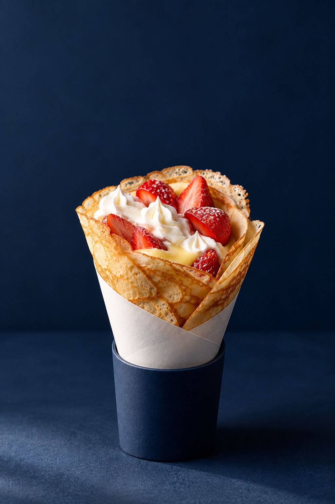

Fraises
01苺定番
久しぶりに来た人も、生地とカスタードと生クリームを「相変わらずおいしい」とほめる定番。
値段を入れます

Crêpes & gâteaux ／ 船橋市南本町
注文を受けてから、
一枚ずつ焼くクレープ。
4.6Googleの口コミ
108件
船橋駅から少し歩いた住宅街。紺色のひさしの小さなお店で、注文を受けてから一枚ずつ焼いています。口コミに並ぶのは、具よりも先に生地をほめる言葉です。
作り置きはせず、一枚ずつ。鉄板に生地を流すところから始まります。
口コミには「薄いのに、生地そのものに存在感がある」という声。
「もちもち」と書く人も、「サクサクで香ばしい」と書く人も。焼き色がその香りをつくります。
カスタードと生クリーム、果物。おかずを包む食事系もあります。
イートインはなく、テイクアウトのみ。近くの公園で食べるのがおすすめ、という声も。
※口コミの内容をもとにした工程のイメージです。実際の作り方に合わせて差し替えます。
営業日・時間はGoogleマップの情報（2026年10月）
臨時のお休みは Instagram をご確認ください。
〒273-0004
千葉県船橋市南本町36-5
イートインはなく、テイクアウトのみです。近くの公園で食べるのがおすすめ、という口コミもあります。
お店の駐車場はありません。近くのコインパーキングをご利用ください。口コミでは、歩いて2分ほどのコインパーキングを使ったという声があります。
予約・取り置きの可否と方法（Instagram の DM など）を、お店のルールに合わせて書きます。
季節限定のクレープは時期によって変わります。今の季節の一枚と、お知らせ先を入れます。
クッキーなど数種類の焼き菓子があります。焼き菓子だけのお買い物や、手みやげ用の包み方について書きます。
使える支払い方法を、実際の内容に合わせて書きます。
フォローしておくと、
新しい一枚に気づけます。